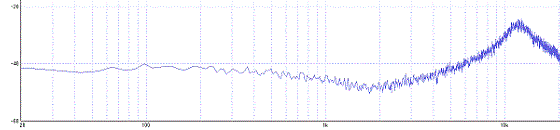

静音ギター用ヘッドフォンアンプ
2016年03月03日 カテゴリー：ヘッドフォンアンプ・その他アンプ
以前ピックアップを取り付けた静音ギターにヘッドフォンアンプを取り付けました。ただせっかくなのでアコギの音に少し近づけたいと思い、イコライザを入れてみることにしました。
まず本物のアコギと静音ギターを全弦ジャラーンと鳴らしたものをそれぞれ録音し、静音ギターの方の音源を加工して本物の音に近づけてみるという作業を行いました。静音ギターは以前取り付けたリアピックアップのみでの録音です。普通アコースティックシミュレーターは低域と高域の周波数を足してあったりしますが、その場合高域をかなり足さないといけなくなりそうなので、中域を減らして高域を足すことにしました。いろいろ複雑にいじれば本物により近づけることができるのかもしれませんが、（面倒なので）2点に絞りました。
回路図は下図です。
以前作ったヘッドフォンアンプにグラフィックイコライザーの回路を入れただけです。大体2kHzが-12dB(Q=3)、12kHzが+15dB(Q=5)となっています。
レイアウトは下図です。
スペースに余裕があるので全然工夫がないレイアウトです。VR1、VR2はトリマーとして使っています。
シミュレーション（上）と実測（下）との比較です。

ちょっと中域の下がり方が今ひとつでしたが、まぁよいと思います。音を聞いた感じでは、それなりに雰囲気は出ています。ただしノイズはどうしても増えてしまいます。
作った後でVOX amPlug Acousticというヘッドフォンアンプが発売されていたことを思い出したんですが、いつの間にか生産中止になっていました。後継のamPlug2でAcousticが発売されたら試してみたいところです。